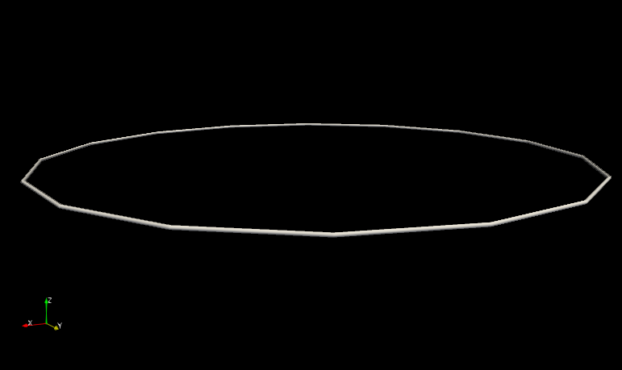
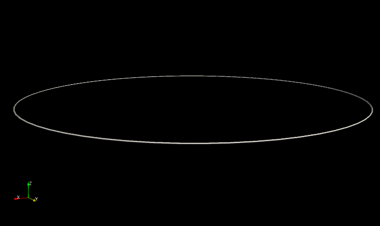

Vortex ring
The following tutorial goes through the simulation of a single vortex ring propagating due to its self-induced propulsion.
The aim is to show how one can:
- Discretise a vortex filament using a spatial curve;
- compute things like the self-induced vortex velocity;
- simulate the motion of the vortex filament over a time period.
We assume that VortexPasta and GLMakie have been installed following the instructions in the Installation section. The code in this tutorial should be executed in the same local environment where those packages were installed.
Defining a vortex ring
The first thing to do is to define a circular vortex ring. In VortexPasta, curves are initialised using the Filaments.init function defined in the VortexPasta.Filaments submodule.
The most straightforward way of defining an arbitrary curve is by first defining a set of discretisation points (which we also call nodes) and then passing that to Filaments.init. In VortexPasta, a point in 3D space is represented by the Vec3 type (which is nothing else than an SVector from the StaticArrays.jl package).
Initialising the ring
Let's define a set of points discretising a circular ring of radius $R$ living on the plane $z = 1$ and centred at $\bm{x}_0 = [3, 3, 1]$:
using VortexPasta
using VortexPasta.Filaments
using VortexPasta.Filaments: Vec3
R = 2.0 # radius of the circular ring
N = 16 # number of discretisation points
x⃗₀ = Vec3(3.0, 3.0, 1.0) # ring centre
θs = range(0, 2π; length = N + 1)[1:N] # discretisation angles (we exclude θ = 2π)
points = [x⃗₀ + R * Vec3(cos(θ), sin(θ), 0) for θ ∈ θs]16-element Vector{SVector{3, Float64}}:
[5.0, 3.0, 1.0]
[4.847759065022574, 3.7653668647301797, 1.0]
[4.414213562373095, 4.414213562373095, 1.0]
[3.7653668647301797, 4.847759065022574, 1.0]
[3.0, 5.0, 1.0]
[2.2346331352698208, 4.847759065022574, 1.0]
[1.585786437626905, 4.414213562373095, 1.0]
[1.1522409349774265, 3.7653668647301797, 1.0]
[1.0, 3.0000000000000004, 1.0]
[1.1522409349774263, 2.2346331352698208, 1.0]
[1.5857864376269046, 1.585786437626905, 1.0]
[2.2346331352698194, 1.152240934977427, 1.0]
[2.9999999999999996, 1.0, 1.0]
[3.76536686473018, 1.1522409349774267, 1.0]
[4.414213562373095, 1.5857864376269046, 1.0]
[4.847759065022573, 2.234633135269819, 1.0]Now that we have defined a set of points, we can create a filament using Filaments.init. Note that this function requires choosing a discretisation method which will be used to interpolate the curve in-between nodes and to estimate curve derivatives. Here we use the QuinticSplineMethod, which represents curves as periodic quintic splines (that is, piecewise polynomials of degree 5):
f = Filaments.init(ClosedFilament, points, QuinticSplineMethod())16-element ClosedFilament{SVector{3, Float64}, QuinticSplineMethod}:
[5.0, 3.0, 1.0]
[4.847759065022574, 3.7653668647301797, 1.0]
[4.414213562373095, 4.414213562373095, 1.0]
[3.7653668647301797, 4.847759065022574, 1.0]
[3.0, 5.0, 1.0]
[2.2346331352698208, 4.847759065022574, 1.0]
[1.585786437626905, 4.414213562373095, 1.0]
[1.1522409349774265, 3.7653668647301797, 1.0]
[1.0, 3.0000000000000004, 1.0]
[1.1522409349774263, 2.2346331352698208, 1.0]
[1.5857864376269046, 1.585786437626905, 1.0]
[2.2346331352698194, 1.152240934977427, 1.0]
[2.9999999999999996, 1.0, 1.0]
[3.76536686473018, 1.1522409349774267, 1.0]
[4.414213562373095, 1.5857864376269046, 1.0]
[4.847759065022573, 2.234633135269819, 1.0]Other possible discretisation options are the CubicSplineMethod and FiniteDiffMethod. The latter estimates derivatives at discretisation points using finite differences (based on the locations of neighbouring points), and performs Hermite interpolations using those derivatives to reconstruct the curve in-between nodes.
Besides, note that the first argument (ClosedFilament) is mandatory and is only there to make sure that we're creating a closed (as opposed to an open-ended) filament. This means in particular that the filament will be automatically "closed" when evaluated outside of its range of definition 1:N. For example, one has f[1] == f[N + 1]:
@show f[1] f[N] f[N + 1]f[1] = [5.0, 3.0, 1.0]
f[N] = [4.847759065022573, 2.234633135269819, 1.0]
f[N + 1] = [5.0, 3.0, 1.0]Getting geometric information out of a filament
Above we have used the f[i] syntax to obtain the location of a discretisation point. As mentioned, curve locations can also be evaluated in-between discretisation points using interpolation. For instance, to evaluate the curve location at some point in-between nodes i and i + 1, one can call f(i, ζ), where ζ is some real value between 0 and 1. In particular, f(i, 0.5) gives an estimation of the midpoint between both nodes, while f(i, 0.0) and f(i, 1.0) respectively correspond to f[i] and f[i + 1]:
i = 2
@show f[i] f(i, 0.0) f(i, 0.5) f(i, 1.0) f[i + 1]f[i] = [4.847759065022574, 3.7653668647301797, 1.0]
f(i, 0.0) = [4.847759065022574, 3.7653668647301806, 1.0]
f(i, 0.5) = [4.662938794254055, 4.111140178487837, 1.0]
f(i, 1.0) = [4.414213562373094, 4.414213562373094, 1.0]
f[i + 1] = [4.414213562373095, 4.414213562373095, 1.0]A similar syntax can be used to obtain derivatives at discretisation points or in-between them:
@show f[i] f[i, Derivative(1)] f[i, Derivative(2)]
@show f(i, 0.5) f(i, 0.5, Derivative(1)) f(i, 0.5, Derivative(2))f[i] = [4.847759065022574, 3.7653668647301797, 1.0]
f[i, Derivative(1)] = [-0.38515318843352947, 0.9298420511074649, 2.3118937889532167e-16]
f[i, Derivative(2)] = [-0.4679382003429555, -0.1938263489345128, 5.773260399983122e-16]
f(i, 0.5) = [4.662938794254055, 4.111140178487837, 1.0]
f(i, 0.5, Derivative(1)) = [-0.5591564491094727, 0.8368367639688045, 3.145509337854615e-16]
f(i, 0.5, Derivative(2)) = [-0.4211061545451067, -0.28137413676338263, -2.4688284605191013e-16]These derivatives assume that curves are parametrised as $\bm{s}(t)$ for $t ∈ [0, T]$, and are computed with respect to this parameter. In practice, the parameter $t$ roughly corresponds to the integrated arc length (and thus $T$ is a rough estimation of the total curve length), but this should never be assumed. In particular, the first derivative $∂\bm{s}/∂t$ is tangent to the curve but it's not necessarily unitary (which would be the case if $t$ was the actual arc length $ξ$).
In some cases, one may want to directly obtain geometrically-relevant quantities such as the unit tangent or the curvature vector (see Geometric quantities for definitions and a list of possible quantities):
t̂ = f[i, UnitTangent()] # "t̂" can be typed by t\hat<tab>
ρ⃗ = f[i, CurvatureVector()] # "ρ⃗" can be typed by \rho<tab>\vec<tab>
@show t̂ ρ⃗t̂ = [-0.3826834323650905, 0.9238795325112863, 2.2970690026439665e-16]
ρ⃗ = [-0.46195622817534865, -0.19134853493294995, 5.699456887032615e-16]We can check that both vectors are orthogonal and that their respective norms are 1 and approximately $1/R$ (where $R$ is the vortex ring radius):
using LinearAlgebra: norm, ⋅ # the dot product ̇`⋅` can be obtained via \cdot<tab>
@show t̂ ⋅ ρ⃗ norm(t̂) norm(ρ⃗) 1/Rt̂ ⋅ ρ⃗ = 1.3092045747108294e-31
norm(t̂) = 0.9999999999999999
norm(ρ⃗) = 0.500017818253491
1 / R = 0.5Plotting the filament
We can readily plot our vortex ring using Makie. For convenience, VortexPasta overloads the Makie plot and plot! functions to be able to directly plot filaments.
using GLMakie
set_theme!(theme_black())
fig = Figure() # create an empty figure
ax = Axis3(fig[1, 1]; aspect = :data) # add an Axis3 for plotting in 3D
zlims!(ax, 0.5, 1.5) # set axis limits in the z direction
plot!(ax, f) # plot filament onto axis
fig # display the figureNote that, by default, the plot simply shows the $N$ filament nodes (circular markers) joined by straight lines. To see how points are actually interpolated in-between nodes we can use the refinement keyword argument:
fig = Figure()
ax = Axis3(fig[1, 1]; aspect = :data)
zlims!(ax, 0.5, 1.5)
plot!(ax, f; refinement = 4)
figIt is also possible to plot other quantities such as the estimated tangent and curvature vectors along the curve:
fig = Figure()
ax = Axis3(fig[1, 1]; aspect = :data)
zlims!(ax, 0.5, 1.5)
plot!(
ax, f;
refinement = 4, linewidth = 4, markersize = 12,
tangents = true, tangentcolor = :Yellow, # plot tangent vectors
curvatures = true, curvaturecolor = :LightBlue, # plot curvature vectors
arrows3d = (shaftlength = 1.0,),
vectorpos = 0.5, # plot vectors at the midpoint in-between nodes
)
figSee filamentplot! for more details and for other possible options.
Computing the vortex ring velocity
An isolated vortex ring of radius $R$ and circulation $Γ$ is known to translate with a velocity (Saffman, 1993):
\[v_{\text{ring}} = \frac{Γ}{4πR} \left[ \ln \left(\frac{8R}{a}\right) - Δ \right],\]
where $a$ is the radius of the vortex core – assumed to be much smaller than $R$ – and $Δ$ is a coefficient which depends on the actual vorticity profile at the core.
- $Δ = 1/2$ for a hollow vortex: $ω(r) = ω₀ \, δ(r - a)$;
- $Δ = 1/4$ for a uniform vorticity distribution: $ω(r) = ω₀$ for $r < a$.
This velocity can be derived by computing the Biot–Savart integral along the circular vortex ring and excluding a very small region (proportional to $a$) from the integral, in the vicinity of the point of interest, thus avoiding the singularity.
In VortexPasta, the velocity induced by one or more vortex filaments is computed by the VortexPasta.BiotSavart submodule. The basic steps for computing the velocity induced by a set of vortices on itself is:
- Set physical and numerical parameters (
ParamsBiotSavart), - initialise a "cache" containing arrays and data needed for computations (
BiotSavart.init_cache), - compute filament velocities from their positions (
velocity_on_nodes!).
Physical and numerical parameters
Before being able to estimate the vortex ring velocity, we need to set the parameters needed to estimate Biot–Savart integrals. All of the required and optional parameters are described in ParamsBiotSavart.
Relevant physical parameters are of two types:
- vortex properties: circulation $Γ$, core radius $a$ and core parameter $Δ$;
- domain size (or period) $L$.
Γ = 1.0 # vortex circulation || "Γ" can be typed by \Gamma<tab>
a = 1e-8 # vortex core size
Δ = 1/2 # vortex core parameter (1/2 for a hollow vortex) || "Δ" can be typed by \Delta<tab>
L = 2π # domain period (same in all directions in this case)Note that here we work with nondimensional quantities, but we could try to relate these physical parameters to actual properties of, say, liquid helium-4. In this case, the vortex core size is $a ≈ 10^{-8}\,\text{cm}$ and the quantum of circulation is $Γ = κ = h/m ≈ 0.997 × 10^{-3}\,\text{cm}^2/\text{s}$, where $h$ is Planck's constant and $m$ the mass of a helium atom. So the above parameters can be relevant to $^4\text{He}$ if one interprets lengths in centimetres and the time unit is about 1000 seconds.
There are also important numerical parameters which need to be set. See the Parameter selection section for an advice on how to set them.
Following that page, we start by setting the resolution $M$ of the numerical grid used for long-range computations and the accuracy parameter $β$, and we set the other parameters based on that:
M = floor(Int, 32 * 2/3) # we prefer if the FFT size is a power of 2, here M′ = σM = 32 (where σ = 1.5)
kmax = π * M / L # this is the maximum resolved wavenumber (the Nyquist frequency)
β = 3.5 # non-dimensional accuracy parameter
α = kmax / (2β) # Ewald splitting parameter || "α" can be typed by "\alpha<tab>"
rcut = β / α # cut-off distance for short-range computations
rcut / L # note: the cut-off distance should be less than half the period L0.37136153388108917Additionally, we can optionally set the parameters for numerical integration. In particular, we can set the quadrature rule used to approximate line integrals within each filament segment (see Numerical integration):
quadrature = GaussLegendre(3) # use 3-point Gauss–Legendre quadratureSee GaussLegendre or the Wikipedia page for more details.
Finally, we put all these parameters together in a ParamsBiotSavart object:
using VortexPasta.BiotSavart
params = ParamsBiotSavart(;
Γ, α, Δ, a,
Ls = (L, L, L), # same domain size in all directions
Ns = (M, M, M), # same long-range resolution in all directions
rcut,
quadrature,
)ParamsBiotSavart{Float64} with:
- Physical parameters:
* Vortex circulation: Γ = 1.0
* Vortex core radius: a = 1.0e-8
* Vortex core parameter: Δ = 0.5
* Domain period: Ls = (6.283185307179586, 6.283185307179586, 6.283185307179586)
- Numerical parameters:
* Ewald splitting parameter: α = 1.5 (σ = 1/α√2 = 0.4714045207910316)
* Quadrature rule: GaussLegendre{3}()
* Quadrature rule (alt.): AdaptiveTanhSinh(Float64; nlevels = 5, rtol = 1.4901161193847656e-8) (used near singularities)
* Short-range backend: CellListsBackend{2}()
* Short-range cut-off: r_cut = 2.3333333333333335 (r_cut/L = 0.37136153388108917)
* Short-range cut-off coeff.: β_shortrange = 3.5
* Local segment fraction: 1
* Long-range backend: NonuniformFFTsBackend(CPU(false); m = HalfSupport(4), σ = 1.5)
* Long-range resolution: Ns = (21, 21, 21) (kmax = 10.0)
* Long-range cut-off coeff.: β_longrange = 3.3333333333333335
* Long-range spherical truncation: falseNote that there are a few parameters, namely the short-range and long-range backends, which haven't been discussed yet. These correspond to different ways of computing both components. We leave them here at their default values. See CellListsBackend and NonuniformFFTsBackend for details on the defaults and their parameters.
Computing the velocity on filament nodes
The last thing to do before launching computations is to create a "cache" where all data (arrays, …) required for computations are kept. This is in part to avoid making large allocations every time we wish to compute Biot–Savart integrals, which would be quite bad for performance. Luckily, creating a cache is very simple:
fs = [f] # note: we need to pass a *vector* of filaments
cache = BiotSavart.init_cache(params, fs)We can now estimate the velocity of all filament nodes using velocity_on_nodes!. But first we need to allocate the output, which will contain all velocities:
vs = map(similar ∘ nodes, fs)
@show summary(vs) summary(vs[1])summary(vs) = "1-element Vector{VortexPasta.PaddedArrays.PaddedVector{5, SVector{3, Float64}, Vector{SVector{3, Float64}}}}"
summary(vs[1]) = "16-element VortexPasta.PaddedArrays.PaddedVector{5, SVector{3, Float64}, Vector{SVector{3, Float64}}}"Note that this is a 1-element vector (because we only have 1 filament). Moreover, the element vs[1] is a vector of Vec3 (3-element vectors, specifically velocity vectors in this case), in which the element vs[1][i] will be the velocity of the filament node fs[1][i].
To actually fill vs with the velocities of the filament nodes, we call velocity_on_nodes!:
velocity_on_nodes!(vs, cache, fs)
vs[1] # prints the velocities of all nodes of the first (and only) filament16-element VortexPasta.PaddedArrays.PaddedVector{5, SVector{3, Float64}, Vector{SVector{3, Float64}}}:
[8.85599482083422e-17, 7.84426520578477e-17, 0.775263386138947]
[8.311521032337398e-16, 1.590280609776578e-16, 0.7768440071494346]
[-8.89578528344651e-16, -9.556560949383144e-16, 0.7782866995113855]
[2.4393449217877784e-17, 5.079331571773107e-16, 0.7768440397416712]
[1.6901777782487378e-18, 1.785788497923935e-16, 0.7752635648065435]
[-4.599377796686262e-17, 6.000342494484134e-16, 0.7768440774612609]
[9.519861772472628e-16, -9.209207177907123e-16, 0.778286734871521]
[-2.5396326748377953e-16, -2.534866875498644e-16, 0.7768439828114035]
[-1.4511269038520231e-15, 1.4518807948138933e-16, 0.7752634071289828]
[1.4217511571424069e-15, 6.423196549003877e-16, 0.7768440205308482]
[-7.441803888036291e-16, -8.531952677453746e-16, 0.7782867702312061]
[1.7710367212050654e-16, 6.742466414291208e-16, 0.77684405312335]
[1.59735002513656e-16, 3.388613411446408e-17, 0.7752635857959106]
[2.279768845049523e-16, -7.631514202913809e-16, 0.7768440154037474]
[-5.635710887971309e-16, 4.2478372901655575e-16, 0.7782867348710768]
[2.164263839719508e-17, 8.613043299958498e-17, 0.7768440448688564]We have done our first Biot–Savart calculation! We can see that all nodes have practically zero velocity in the $x$ and $y$ directions, while they all have approximately the same velocity in the $z$ direction. Good news, this is exactly what we expect for a vortex ring!
We can compute the mean velocity and quantify the velocity variation along the filament:
using Statistics: mean, std
v_mean = mean(vs[1])
v_std = std(vs[1])
v_std_normalised = v_std / norm(v_mean) # normalised standard deviation
@show v_mean v_std v_std_normalisedv_mean = [-2.6514215552430043e-18, -1.3489909182532554e-17, 0.7768095702778841]
v_std = [7.104584351306881e-16, 5.710633948989512e-16, 0.0011045079633929848]
v_std_normalised = [9.14585069898842e-16, 7.351394946056954e-16, 0.0014218516424789602]Note that there are some (very small) fluctuations of the velocity about the mean. As discussed and verified further below, this is explained by periodicity effects, as the vortex ring is affected by its periodic images. Furthermore, different points along the ring are at different distances from the images, and therefore the velocity induced by the images varies slightly as we move along the vortex ring. In other words, periodicity introduces a slight anisotropy on the behaviour of the vortex ring.
To visualise things, it is easy to plot the filament with the node velocities:
fig = Figure()
ax = Axis3(fig[1, 1]; aspect = :data)
zlims!(ax, 0.5, 1.5)
plot!(
ax, fs[1], vs[1];
refinement = 4,
arrows3d = (lengthscale = 0.5,),
)
figComparison with analytical expression
We can finally compare the filament velocity with the analytical vortex ring velocity according to the expression at the start of this section:
v_ring = Γ / (4π * R) * (log(8R / a) - Δ)
vz = v_mean[3]
relative_difference = (v_ring - vz) / v_ring
@show v_ring vz relative_differencev_ring = 0.8233590310692667
vz = 0.7768095702778841
relative_difference = 0.05653604203615822We can see that we're quite close, and that the relative difference between the two is of the order of 5%. This is already nice, but note that most of the difference may be explained by periodicity effects, as shown in more detail in the next section. Indeed, the vortex ring is not alone, but is also affected by its periodic images.
We can visualise this by plotting the ring and its nearest 26 periodic images (actually there's an infinity of them!):
fig = Figure()
ax = Axis3(fig[1, 1]; aspect = :data)
hidespines!(ax)
hidexdecorations!(ax; label = false)
hideydecorations!(ax; label = false)
hidezdecorations!(ax; label = false)
fimage = copy(f)
plot!(ax, f; refinement = 4, markersize = 0, color = :OrangeRed, linewidth = 2)
for I ∈ CartesianIndices((-1:1, -1:1, -1:1))
local widths = (L, L, L)
local offset = Vec3(Tuple(I) .* widths)
local box = Rect(offset..., widths...)
wireframe!(ax, box; color = (:white, 0.5), linewidth = 0.2) # plot cube
iszero(I) && continue # don't replot the "original" filament
fimage .= f .+ Ref(offset)
update_coefficients!(fimage) # updates interpolation coefficients
plot!(ax, fimage; refinement = 4, markersize = 0, color = :LightBlue, linewidth = 1)
end
figOne can show that the images have the tendency to slow the vortex down, which is consistent with our results (since vz < v_ring). The effect here is relatively important because the ring diameter $2R$ is comparable to the domain period $L$:
2R/L0.6366197723675814We can expect the periodicity effect on the ring to be much weaker for smaller rings.
Side note: disabling periodicity
It is actually possible to disable the periodic boundary conditions, effectively leading to an open domain with a unique vortex ring.
In VortexPasta.jl, disabling periodicity amounts to disabling the long-range part of Ewald summation, so that all scales are computed by the "short"-range component. The cut-off distance is therefore infinity, and it makes no sense to use cell lists to accelerate the computations. Other methods exist (and are now standard) to accelerate this kind of computation, but these are not implemented here. So, while it is possible to disable periodicity, this should only be used for testing or for small calculations.
To disable periodicity, one should pass α = Zero() and Ls = Infinity() to ParamsBiotSavart:
params_inf = ParamsBiotSavart(;
Γ, α = Zero(), Δ, a,
Ls = Infinity(),
quadrature,
)ParamsBiotSavart{Float64} with:
- Physical parameters:
* Vortex circulation: Γ = 1.0
* Vortex core radius: a = 1.0e-8
* Vortex core parameter: Δ = 0.5
* Domain period: Ls = (Infinity(), Infinity(), Infinity())
- Numerical parameters:
* Ewald splitting parameter: α = Zero() (σ = 1/α√2 = Infinity())
* Quadrature rule: GaussLegendre{3}()
* Quadrature rule (alt.): AdaptiveTanhSinh(Float64; nlevels = 5, rtol = 1.4901161193847656e-8) (used near singularities)
* Short-range backend: NaiveShortRangeBackend()
* Short-range cut-off: r_cut = Infinity() (r_cut/L = Infinity())
* Short-range cut-off coeff.: β_shortrange = Infinity()
* Local segment fraction: 1
* Long-range backend: VortexPasta.BiotSavart.NullLongRangeBackend()
* Long-range resolution: Ns = (0, 0, 0) (kmax = 0.0)
* Long-range cut-off coeff.: β_longrange = Infinity()
* Long-range spherical truncation: falseHere Zero and Infinity are custom types that, as one may expect, represent $0$ and $+∞$.
We can now compute the vortex ring velocity in the absence of periodic effects:
cache_inf = BiotSavart.init_cache(params_inf, fs)
vs_inf = map(similar, vs)
velocity_on_nodes!(vs_inf, cache_inf, fs)
v_mean_inf = mean(vs_inf[1])
v_std_inf = std(vs_inf[1])
v_std_normalised_inf = v_std_inf / norm(v_mean_inf)
@show v_mean_inf v_std_inf v_std_normalised_infv_mean_inf = [-2.3063672526170573e-18, -1.0682373101594472e-17, 0.8232559455808263]
v_std_inf = [7.108548907868633e-16, 5.710968952197167e-16, 6.781393946228649e-15]
v_std_normalised_inf = [8.634676671364197e-16, 6.937051572907798e-16, 8.237285114830501e-15]The velocity fluctuations along the filament are now practically zero! This should be contrasted with the standard deviation of about $0.001$ we obtained in the periodic case. This is consistent with what was explained on the anisotropy introduced by periodicity, in the sense that not all points on the filament "feel" the effect of the periodic images in the same way.
Moreover, the mean velocity is even closer to the analytical velocity:
vz_inf = v_mean_inf[3]
relative_difference_inf = (v_ring - vz_inf) / v_ring0.00012520113893270667The relative difference is reduced from 5% to about 0.01%! Once again, this clearly shows that periodic images have some (very minor) impact on the effective vortex ring velocity.
Note that we could further reduce the difference with the analytical result by increasing the filament resolution $N$. The results also depend on the chosen discretisation scheme: QuinticSplineMethod allows to accurately describe the circular vortex ring geometry (and FourierMethod even more so), while methods like CubicSplineMethod and FiniteDiffMethod are less accurate.
Making the ring move
Up to now we have shown how to compute the velocity self-induced by a vortex filament on its discretisation points. We now want to use this velocity to advect the vortex filament over time. In the case of a vortex ring, its displacement is very simple and boring (the vortex ring moves with constant velocity), but this case is still useful for instance for testing the stability of timestepping schemes.
For running temporal simulations, we want to use the VortexPasta.Timestepping submodule. The syntax is somewhat inspired from the popular DifferentialEquations.jl ecosystem.
A basic simulation
We start by defining a VortexFilamentProblem, which takes (1) an initial condition (in our case, the initial vortex ring we already defined); (2) the time span of the simulation; and (3) parameters for Biot–Savart computations (which we already defined as well):
using VortexPasta.Timestepping
T = L / 2vz # time it should take for the ring to cross half the periodic box
tspan = (0.0, T) # time span; this basically determines when to stop the simulation
prob = VortexFilamentProblem(fs, tspan, params)VortexFilamentProblem with fields:
├─ p: ParamsBiotSavart{Float64}(Γ = 1.0, a = 1.0e-8, Δ = 0.5, α = 1.5, …)
├─ tspan: (0.0, 4.044224960392761) -- simulation timespan
└─ fs: 1-element VectorOfVectors -- vortex filaments at t = 0.0The second step is to "initialise" the problem using init. This means choosing a temporal scheme, an initial timestep, as well as optional parameters related for instance to temporal adaptivity, spatial refinement of the filaments, or vortex reconnections.
For now, we use the explicit RK4 timestepping scheme, set a constant timestep dt, and leave the defaults for everything else:
l_min = minimum_knot_increment(fs) # this is an estimate for the minimum distance between discretisation points
dt = 3 * l_min^2 / (Γ * log(l_min / a)) # we set the timestep to be proportional to some characteristic "fast" timescale
iter = init(prob, RK4(); dt)VortexFilamentSolver with fields:
├─ prob: VortexFilamentProblem with fields:
│ ├─ p: ParamsBiotSavart{Float64}(Γ = 1.0, a = 1.0e-8, Δ = 0.5, α = 1.5, …)
│ ├─ tspan: (0.0, 4.044224960392761) -- simulation timespan
│ └─ fs: 1-element VectorOfVectors -- vortex filaments at t = 0.0
├─ fs: 1-element VectorOfVectors -- vortex filaments
├─ vL: 1-element VectorOfVectors -- vortex line velocity (vs + mutual friction + forcing)
├─ vs: 1-element VectorOfVectors -- self-induced superfluid velocity
├─ tangents: 1-element VectorOfVectors -- local unit tangent
├─ ψs: 1-element VectorOfVectors -- streamfunction vector
├─ time: TimeInfo(nstep = 0, t = 0.0, dt = 0.10052952958498958, dt_prev = 0.10052952958498958, nrejected = 0)
├─ stats: VortexPasta.Timestepping.SimulationStats{Float64}(...)
├─ dtmin: 0.0
├─ refinement: NoRefinement()
├─ adaptivity: NoAdaptivity()
├─ reconnect: NoReconnections()
├─ fast_term: LocalTerm()
├─ LIA: false
├─ fold_periodic: true
├─ cache_bs: BiotSavartCache
├─ cache_timestepper: TemporalSchemeCache(RK4())
└─ to: TimerOutputs.TimerOutputNote that the maximum possible timestep to avoid numerical instability is mainly limited by the filament resolution $ℓ_{\text{min}}$. More precisely, the limit is the frequency of spurious oscillations associated to that length scale. These correspond to Kelvin waves, whose frequency roughly scales as $ω(ℓ) ∼ Γ \ln (ℓ / a) / ℓ^2$. See the Kelvin wave tutorial for more details.
One can use adaptive timestepping with the AdaptBasedOnSegmentLength criterion, which automatically updates the timestep based on the current minimal distance between filament nodes.
We now call solve! to run the simulation until $t = T = L / 2 v_{\text{ring}}$:
solve!(iter) # run the simulation until t = T
iter.t / T # check that the current time is t == T1.0We can check that, as expected, the ring has crossed half the periodic box:
displacement = @. (iter.fs - prob.fs) / L
displacement[1] # prints displacement of the first (and only) filament16-element ClosedFilament{SVector{3, Float64}, QuinticSplineMethod}:
[6.113989411721162e-5, 3.5171350429755775e-9, 0.5000375413385163]
[5.766581447775463e-6, -1.452474662249476e-5, 0.49999929516671016]
[-4.287392334531488e-5, -4.28771601584957e-5, 0.4999610452787827]
[-1.452391835947825e-5, 5.759797073164045e-6, 0.49999928628865836]
[3.517195544193518e-9, 6.113021854644354e-5, 0.5000375289739358]
[1.453101916514252e-5, 5.759730881439026e-6, 0.4999992897559682]
[4.288124286694605e-5, -4.287733777593577e-5, 0.49996105158902626]
[-5.759366642903325e-6, -1.4524655364182185e-5, 0.49999930326260483]
[-6.113233734818239e-5, 3.5171352550125564e-9, 0.5000375500267278]
[-5.759300452945281e-6, 1.4531756047783834e-5, 0.4999993067298567]
[4.2881420480993535e-5, 4.288465717242979e-5, 0.4999610578991683]
[1.4530927906829945e-5, -5.752516199265619e-6, 0.49999929785173214]
[3.517195614872511e-9, -6.112266190506056e-5, 0.500037537662008]
[-1.4523827100953637e-5, -5.752582391697428e-6, 0.49999929438442414]
[-4.2874100958514216e-5, 4.2884479553752826e-5, 0.4999610515889262]
[5.76651525845353e-6, 1.4531847306096408e-5, 0.49999929863396314]As we can see, the filament nodes have basically only moved in the $z$ direction by almost exactly $L / 2$.
Accessing the instantaneous simulation state
Above we have simply run a simulation from start to finish, without caring about what happened in-between. In reality, one usually wants to be able to do things with the intermediate states, for instance, to track the evolution of the total vortex length, the energy, or simply to make nice movies.
There are two ways of doing this, both inspired by DifferentialEquations.jl (see here and here):
1. Using the integrator interface
This option is actually quite intuitive. The idea is to explicitly iterate timestep by timestep (typically using a for or while loop) until we decide it's time to stop. At each iteration we perform a simulation timestep (going from $t_n$ to $t_{n + 1} = t_n + Δt$), and then we can do whatever we want with the instantaneous solution contained in iter.
Note that, in this case, the time span defined in the VortexFilamentProblem is completely ignored, meaning that we can stop the simulation whenever we want.
To use this interface, we create the solver in the same way as before, and then we advance the solver one timestep at a time using step!. For instance, we can choose to stop when we have performed 20 timesteps. And every 5 timestep we print some information:
iter = init(prob, RK4(); dt)
while iter.nstep ≤ 20
# Print the time and the mean location of the vortex ring every 5 solver iterations.
local dt # avoid "soft scope" warning
(; nstep, t, dt,) = iter
if nstep % 5 == 0
Xavg = mean(iter.fs[1])
println("- step = $nstep, t = $t, dt = $dt")
println(" Average ring location: ", Xavg)
end
step!(iter) # run a single timestep
end- step = 0, t = 0.0, dt = 0.10052952958498958
Average ring location: [3.0, 3.0, 1.0]
- step = 5, t = 0.5026476479249479, dt = 0.10052952958498958
Average ring location: [3.0000000003366756, 3.0000000003366685, 1.390461016247372]
- step = 10, t = 1.005295295849896, dt = 0.10052952958498958
Average ring location: [3.0000000013815824, 3.0000000013815518, 1.780921856183972]
- step = 15, t = 1.5079429437748435, dt = 0.10052952958498958
Average ring location: [3.0000000031468166, 3.0000000031467504, 2.171383038539117]
- step = 20, t = 2.010590591699791, dt = 0.10052952958498958
Average ring location: [3.000000005615942, 3.000000005615829, 2.5618437401871037]2. Using callbacks
We can do the same using a callback. This is a function which gets called at each solver iteration with the current state of the solver.
The idea is to create such a function which receives a single iter argument. Then we tell init to use this function as a callback, and use solve! as we did earlier to run the simulation until the end time:
# Prints the time and the mean location of the vortex ring every 5 solver iterations.
function print_solver_info(iter)
(; nstep, t, dt,) = iter
if nstep % 5 == 0
Xavg = mean(iter.fs[1])
println("- step = $nstep, t = $t, dt = $dt")
println(" Average ring location: ", Xavg)
end
end
iter = init(prob, RK4(); dt, callback = print_solver_info)
solve!(iter)- step = 0, t = 0.0, dt = 0.10052952958498958
Average ring location: [3.0, 3.0, 1.0]
- step = 5, t = 0.5026476479249479, dt = 0.10052952958498958
Average ring location: [3.0000000003366756, 3.0000000003366685, 1.390461016247372]
- step = 10, t = 1.005295295849896, dt = 0.10052952958498958
Average ring location: [3.0000000013815824, 3.0000000013815518, 1.780921856183972]
- step = 15, t = 1.5079429437748435, dt = 0.10052952958498958
Average ring location: [3.0000000031468166, 3.0000000031467504, 2.171383038539117]
- step = 20, t = 2.010590591699791, dt = 0.10052952958498958
Average ring location: [3.000000005615942, 3.000000005615829, 2.5618437401871037]
- step = 25, t = 2.5132382396247386, dt = 0.10052952958498958
Average ring location: [3.000000008760436, 3.000000008760268, 2.9523050310651238]
- step = 30, t = 3.015885887549686, dt = 0.10052952958498958
Average ring location: [3.000000012611074, 3.0000000126108435, 3.3427656681942226]
- step = 35, t = 3.5185335354746337, dt = 0.10052952958498958
Average ring location: [3.0000000171885937, 3.0000000171882912, 3.7332269777130382]
- step = 40, t = 4.021181183399581, dt = 0.10052952958498958
Average ring location: [3.0000000224639174, 3.000000022463532, 4.12368763982232]Note that the callback is also called once when the solver is initialised (when nstep = 0).
Making an animation
We can use either of the two methods above to create a video of the moving vortex. Here we will use Makie to create the animation. See the Makie docs on animations for more details.
In this example we will use the integrator interface. We start by initialising the solver and creating a plot with to the initial condition:
iter = init(prob, RK4(); dt)
f_obs = Observable(iter.fs[1]) # variable to be updated over time
t_obs = Observable(iter.t) # variable to be updated over time
fig = Figure()
ax = Axis3(fig[1, 1]; aspect = :data, title = @lift("Time: $($t_obs)"))
hidespines!(ax)
box = Rect(0, 0, 0, L, L, L) # periodic domain limits
wireframe!(ax, box; color = (:white, 0.5), linewidth = 0.5)
plot!(ax, f_obs; markersize = 0, refinement = 4, linewidth = 2)
figNote that we have wrapped the vortex ring filament iter.fs[1] in an Observable. The plot will be automatically updated each time we modify this Observable object:
record(fig, "vortex_ring.mp4") do io
recordframe!(io) # add initial frame (initial condition) to movie
while iter.t < 2T
step!(iter) # run a single timestep
notify(f_obs) # tell Makie that filament positions have been updated
t_obs[] = iter.t # update displayed time
yield() # allows to see the updated plot
recordframe!(io) # add current frame to movie
end
endNote that here we have used record and recordframe! to generate a movie file, but these are not needed if one just wants to see things moving in real time as the simulation runs.
Saving state to disk
It is often useful to be able to save the solver state to disk, for instance to be able to restart a simulation from that state or to analyse the data. In VortexPasta this is possible using the save_checkpoint function (included in VortexPasta.Timestepping).
Data is written in the HDF5 format, which is a binary format that can be easily explored using command-line tools or the HDF5 interfaces available in many different programming languages. More precisely, data is written to VTKHDF files, which are HDF5 files with a specific organisation that can be readily understood by visualisation tools such as ParaView. In other words, simulation outputs can be readily visualised without the need to convert them or to have a "translation" file explaining how to visualise the binary data.
ParaView doesn't recognise the usual .h5 file extension as a VTKHDF file. For this reason, it is recommended to use .vtkhdf if one wants to visualise the data.
Writing filament data and reading it back
We write filament locations and other solver data to disk:
save_checkpoint("vortex_ring.vtkhdf", iter)This creates an HDF5 file with the following structure:
$ h5ls -r vortex_ring.vtkhdf
/ Group
/VTKHDF Group
/VTKHDF/Lines/Connectivity Dataset {17}
/VTKHDF/Lines/NumberOfCells Dataset {1}
/VTKHDF/Lines/NumberOfConnectivityIds Dataset {1}
/VTKHDF/Lines/Offsets Dataset {2}
/VTKHDF/NumberOfPoints Dataset {1}
/VTKHDF/Points Dataset {17, 3}
/VTKHDF/RefinementLevel Dataset {SCALAR}
[+ other stuff needed by ParaView...]
/VortexPasta Group
/VortexPasta/BiotSavartParams Group
[...]
/VortexPasta/VortexFilamentSolver Group
[...]The filament locations and everything else to be visualised is written to a /VTKHDF group (which is some sort of subdirectory in the HDF5 file). In this case, we have a single cell which corresponds to our vortex ring (one VTK cell corresponds to one vortex filament). The important datasets here are Points, which contains the discretisation points of all filaments, and Lines/Offsets, which allows to identify which point corresponds to which vortex. See FilamentIO.write_vtkhdf for more details.
There is also a /VortexPasta group with different subgroups. It contains Biot–Savart and solver parameters, as well as some of the solver state at the end of the simulation (time, timestep, ...).
The filament locations can be read back using FilamentIO.read_vtkhdf:
using VortexPasta.FilamentIO # includes read_vtkhdf
fs_read = read_vtkhdf("vortex_ring.vtkhdf", Float64, CubicSplineMethod())
fs_read == iter.fstrueAlternatively, one can use load_checkpoint, which also loads part of the solver state:
checkpoint = load_checkpoint("vortex_ring.vtkhdf", Float64, CubicSplineMethod())
checkpoint.fs == iter.fstrueVisualising VTKHDF files
Opening this file in ParaView should produce something like this:

Things look quite rough since, by default, we only export the discretisation points, which ParaView connects by straight lines. As with Makie plots, we can make things look nicer by passing the refinement argument:
save_checkpoint("vortex_ring_refined.vtkhdf", iter; refinement = 4)
Attaching more data
It can also be useful to include other data associated to the filaments, such as the velocity of the discretisation points. One can also easily add geometric quantities along filaments (see GeometricQuantity for a list of possible options).
As an example, we can save the positions, velocities, streamfunction, local curvature vector and time values corresponding to the final state of our last simulation:
save_checkpoint("vortex_ring_with_data.vtkhdf", iter; refinement = 4) do io
io["velocity"] = iter.vs
io["streamfunction"] = iter.ψs
io["curvatures"] = CurvatureVector() # note: no need to explicitly compute curvatures!
io["time"] = iter.t
endThe HDF5 file structure now looks like:
$ h5ls -r vortex_ring_with_data.vtkhdf
/ Group
/VTKHDF Group
/VTKHDF/FieldData Group
/VTKHDF/FieldData/time Dataset {1}
/VTKHDF/Lines/Connectivity Dataset {65}
/VTKHDF/Lines/NumberOfCells Dataset {1}
/VTKHDF/Lines/NumberOfConnectivityIds Dataset {1}
/VTKHDF/Lines/Offsets Dataset {2}
/VTKHDF/NumberOfPoints Dataset {1}
/VTKHDF/PointData Group
/VTKHDF/PointData/curvatures Dataset {65, 3}
/VTKHDF/PointData/streamfunction Dataset {65, 3}
/VTKHDF/PointData/velocity Dataset {65, 3}
/VTKHDF/Points Dataset {65, 3}
/VTKHDF/RefinementLevel Dataset {SCALAR}
[...]
/VortexPasta
[...]Note that a PointData group has been created with two datasets: streamfunction and velocity. These correspond to data attached to the filaments, and have the same dimensions as the Points dataset. These can be readily visualised in ParaView. Besides, a FieldData group has been created with the time dataset. In VTK, "field data" corresponds to values that are not directly attached to the geometry, such as scalar quantities in this case.
Loading the attached data is done in a similar way (see read_vtkhdf for details):
vs_read = map(similar ∘ nodes, fs)
ψs_read = map(similar ∘ nodes, fs)
fs_read = read_vtkhdf("vortex_ring_with_data.vtkhdf", Float64, CubicSplineMethod()) do io
read!(io, vs_read, "velocity")
read!(io, ψs_read, "streamfunction")
local t_read = read(io, "time", FieldData(), Float64) # note: this is read as an array
@show t_read
end
@show (fs_read == iter.fs) (vs_read == iter.vs) (ψs_read == iter.ψs)t_read = [8.142891896384167]
fs_read == iter.fs = true
vs_read == iter.vs = true
ψs_read == iter.ψs = trueNote that, when reading "refined" datasets, only the original discretisation points and data on them are read back. The points and data added in-between nodes for refinement purposes are discarded.
This page was generated using Literate.jl.